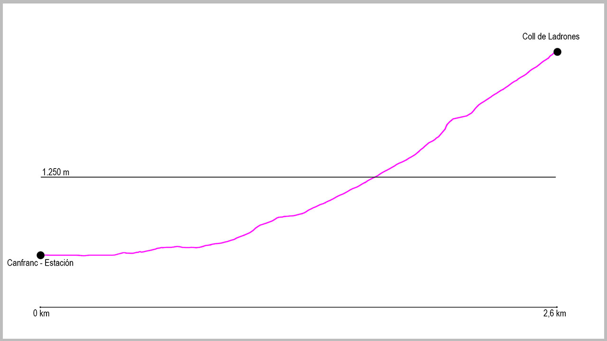

Desde el puente de la Estación de Canfranc, cogeremos la calle principal en dirección norte. Al llegar al final del pueblo seguiremos por el arcén derecho, y justo al pasar la boca española del Túnel de Somport sale un pequeño camino que va paralelo a la carrera. Lo tomaremos y a escasos 200 metros llegaremos a un primer puente que cruza el río Aragón y desde donde sale la pista que nos llevará al final de la ruta. Una vez estemos en ella, no deberemos dejarla en todo el recorrido. Varios cruces saldrán a nuestra derecha (Melancólicos o Casita Blanca), pero nosotros la seguiremos. Tras una primera curva de 180ª, la pista va cogiendo altura para llegar a una zona ya sin apenas bosque. Aquí volverá a hacer otras dos curvas de herradura para llevarnos a partir de este punto a dar vista a Coll de Ladrones y poco después a nuestro objetivo.
